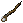

Runed Switch
宝珠の守人（Mondain's Legacy）から登場したタリスマンには、チャージの付いたプロパティが存在します。
Runed switchは、そのチャージを回復させる効果がありますが、作成に手間がかかります。
タリスマンの説明
１．Runed switchの作り方
runed switchの作成には、複数の工程を経る必要があります。
 ×8 ×8 |
硝工 |
 ×1 ×1 |
書写 |
×1 |
大工 |
×1 |
 ×1 ×1 |
 ×1 ×1 |
| ×1 |
 ×1 ×1 |
書写 |
 ×1 ×1 |
| ×1 |
| ×1 |
| ×1 |
 ×2 ×2 |
細工 |
 ×1 ×1 |
 ×1 ×1 |
 ×1 ×1 |
 ×2 ×2 |
２．Runed Switchの使い方
- Runed switchをダブルクリックする
- チャージ（残り使用回数）が0回になったタリスマンをターゲットに指定する
- 使用回数が回復する
チャージを使い切っていないタリスマンに使用しても効果はありません（現在のチャージを使い切るまでチャージできない内容のメッセージが出現します）。
チャージの回復量は、包帯が出現するタリスマンを繰り返しチャージしたところ（初期31→24→15→32→14→30→・・）となっており、
初期に出現しうるチャージの範囲内（10〜50）でランダムに回復するようです。
なお、トレジャーハントで入手できる mana phasing orb [マナ同調のオーブ]のチャージを回復させることはできません。
mana phasing orb [マナ同調のオーブ]のチャージを回復させることはできません。